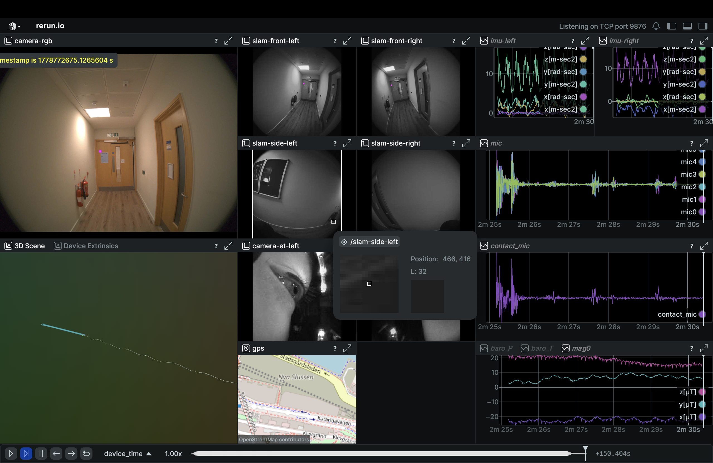
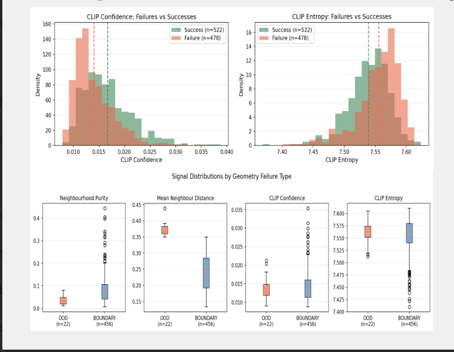

I am a Master’s student in Artificial Intelligence at the Department of Computing, Imperial College London, currently working on my dissertation with Dr Rolandos Potamias. My research interests lie in spatial and 3D scene understanding, vision-language models, and embodied AI, particularly how multimodal models reason about space, viewpoint, and time.
Previously, I was a Machine Learning Engineer at Wadhwani AI, where I worked on computer vision systems for newborn health monitoring, and Agentic pipelines for NLP-based disease surveillance systems.

